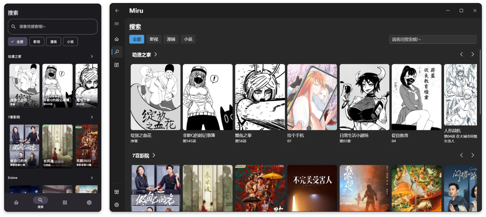

Miru 网页版完整上手教程——从打开页面到装好第一个扩展
这篇实操教程带你从零走完 Miru 网页版的完整流程：访问实例、启用官方仓库、安装扩展、搜索内容、追更检查，以及新手最容易踩的 CORS 坑和解法。
读完这篇教程，你就能在浏览器里用 Miru 网页版搜片子、看漫画、读小说了——不需要装任何客户端，也不用懂任何技术细节。我们一步一步来。
准备：你需要知道的几件事
先澄清几个容易搞混的点，免得你打开页面一脸懵。
Miru 是一个聚合类阅读器/播放器——它的官网上有更完整的功能概览，核心机制是"扩展"。官方仓库里的扩展负责把各个媒体源接进来——视频源、漫画源、小说源都由不同的扩展处理。网页版是 Miru 的浏览器形态，跟桌面客户端相比有功能缩水，但拿来快速体验、临时应急完全够用。
前置条件只有一个：能访问社区实例。目前社区维护的现成地址是 miru.0u0.ren，直接在浏览器里打开就行。官方自己的 Web 版还在重构，所以你现在看到的基本都是社区实例。

至于浏览器选哪个，Chrome / Edge / Firefox 都行。但有一点要记牢——浏览器的同源策略就是后续所有功能限制的根因，翻到第三节的时候你就懂了。
第一步：打开页面、浏览默认内容
直接访问社区实例地址。加载完之后你看到的界面大概长这样：左侧是分类标签（视频 / 漫画 / 小说），中间是内容卡片流，右侧是仓库管理区。
刚打开的时候，中间区域应该已经能看到一批内容了——这是官方仓库里已经装好的扩展返回的 latest() 结果。如果中间一片空白、只有卡片框在加载，那大概率是 CORS 被拦了，我们第三节再说。
先随便点一张卡片进去，看看详情页长什么样。详情页会显示简介、封面和列表——视频扩展显示分集、漫画扩展显示章节、小说扩展显示长篇章节目录。页面能正常打开、内容能正常显示，说明你的浏览器和这台社区实例的通信是畅通的。
第二步：启用官方仓库、安装第一个扩展
能看默认内容只是起步。真正好玩在"自己装扩展"这一步。
切换到右侧的仓库管理区域，你会看到官方仓库的条目。它应该是默认存在的（URL 内置在 Miru 里），如果没有就手动添加一下，仓库地址通常写在应用设置里。找到后，点一下它右侧的启用按钮。

启用之后，官方仓库下面会展开一个列表，里面按 bangumi（视频）、manga（漫画）、fikushon（小说）分类展示它收录的所有扩展。扩展数量会随社区贡献变化，失效的会被移除、新写好的会加进来。
挑一个你感兴趣的点一下安装——比如"某动漫站扩展"或"某小说站扩展"。等几秒钟，安装好的扩展会出现在"已安装扩展"列表里，状态变成绿色。
装完之后回到中间区域，刷新一下（或者关掉标签页重进），你应该能看到新加的扩展也开始返回内容了。顶栏搜索框在视频标签下会并行调用所有 bangumi 扩展的搜索方法，所以装得越多、搜到想要内容的概率越大。
第三步：搜索、详情、播放/阅读
现在内容齐了，我们走一遍完整的消费链路——至于扩展背后是怎么被 Mirv 调起的，比如 latest / search / detail 这些生命周期方法，具体在Miru文档里有更细的解释，先专注体验再说。
顶部搜索框输入关键词，比如"进击的巨人"。所有已安装的同类型扩展会并发执行搜索，结果以卡片形式返回。点开一张卡片，进入详情页，浏览简介和列表，再点击具体那一集或那一章。
- 视频类：Mirv 会接管播放，支持 HLV / MP4 流。如果你的浏览器打不开视频，通常是目标站点没开 CORS；
- 漫画类：点击章节后会加载图片列表，受图片源 CORS 影响；
- 小说类：点击章节后 Mirv 小说阅读器接管，提供字号、行距、背景色等设置。
如果你只想快速扫一眼内容能不能搜到、能不能打开，到这一步其实就够了——网页版定位就是快速试玩通道，确认扩展正常之后，长期使用建议还是换桌面或 Android 客户端，可以直接从官方下载获取安装包。
第四步：追更检查（可选但好用）
装好扩展、看过几集之后，有一个功能值得顺手试一下——追更。
Mirv 的扩展可以实现 checkUpdate() 方法，用来主动检查某个条目有没有新集或新章节。你在详情页或消费页应该能看到类似"追更"的按钮，点一下、选中之后，Mirv 会定期比对上次记录的最新章节标识。如果返回值变了，就说明有更新。
不是所有扩展都实现了这个方法。如果某个扩展装上后追更功能是灰的，说明扩展本身没写这部分逻辑，不是你的问题。
新手最容易翻车的三个卡点
到这里基本流程走完了，但有三个地方几乎是每个新手都会踩一遍的坑，提前说清楚省得你反复怀疑自己操作错了。
卡点一：打开页面中间一片空白
症状：左侧标签能切，但中间区域只有骨架没有卡片。
原因：浏览器 CORS 拦了扩展发起的跨域请求。Mirv 的扩展通过 this.request 代理来绕过同源策略，但 Web 端这层代理本身也受浏览器约束——遇到严格的目标站点，代理也绕不过去。
解法：换个扩展试试，或者干脆别在网页版纠结，直接下客户端。社区实例 miru.0u0.ren 上跑不通的扩展，在桌面端大概率是正常的。
卡点二：视频源一直转圈、加载不出来
症状：卡片能搜到、详情页能打开，但点进播放页就是一片黑或者无限 loading。
原因：视频流源的 CORS 配置问题。MP4 格式通常还好，HLV 流如果目标站点没开跨域就是没法在浏览器里播。
解法：还是那个结论——Web 版的视频播放能力就是受 CORS 限制的。能在 Web 端播说明运气好、源配置宽松；播不了是正常现象，换客户端就解决。
卡点三：装了漫画/小说扩展但搜不出内容
症状：扩展状态显示绿色、安装成功，但切到漫画或小说标签后中间没有任何新内容。
原因： fikushon 和 manga 类型扩展比 bangumi 晚加入，官方仓库收录最少。很多漫画/小说站扩展来自第三方仓库或社区分享文件，这些扩展的 CORS 问题更普遍。
解法：手动添加一个社区分享的自定义仓库，或者直接导入单个扩展 JS 文件。如果还是不行，考虑自己写一个——fikushon 扩展只需要处理文本请求、不需要视频流也不需要图片防盗链，是三种扩展里最好写的。
进阶：什么时候该换客户端
讲完了 Web 版能做什么，也该说说什么时候 Web 版就不够用了。
- 想稳定长期使用：社区实例的稳定性和维护状况不是官方承诺的，哪天宕了没人担着；
- 想写或调试扩展：桌面客户端能直接看到扩展日志，Android 端也能用 adb 看，Web 端调试体验最差——扩展输出的错误日志在浏览器沙箱里你看不到；
- Web 版搜索不出任何结果或视频源加载失败：大概率是 CORS 问题，直接换客户端能解决。
总结一下 Web 版的正确打开方式——把它当作快速试玩通道，先在浏览器里确认扩展能正常搜到内容，再装客户端做主力。这是最省心、也最符合 Mirv 设计初衷的使用流程。
至于更深入的玩法——比如自己写一个 fikushon 扩展、用桌面端的代理设置让所有扩展都能跑、或者追踪扩展的生命周期方法——那些内容放在专门的开发向文章里说会更合适。作为终端用户，你现在已经能顺畅地用 Mirv 网页版搜到想看的视频、漫画和小说了。
这套资料在三个仓库都能拿到，从文档维护角度保持多地备份也方便不同网络环境下的访问：GitHub 主仓库是最原始的来源，Gitee适合国内网络直接浏览，GitCode作为额外备份确保任何单一平台的波动都不会影响你取到完整的文档和扩展文件。